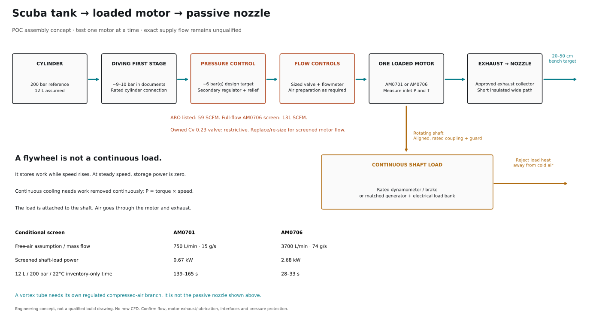

Scuba motor POC assembly
The tank is a plausible source. The existing full supply path is not yet adequate for the screened motor flows. Start with AM0701, one motor at a time. The current valve needs replacement/re-sizing for the screened flows. AM0706 also exceeds the secondary regulator’s listed flow; plan a larger regulator unless its manufacturer curve qualifies the required operating point.

What the documents establish
0730, slides 7–8 identifies a 200 bar cylinder, generic diving first stage at 130–150 psi, and an ARO R37121-600-VS secondary regulator. 1008, slide 5 shows an 8–10 bar first-stage line. The first-stage outlet exceeds the motors’ published 7 bar range. Secondary pressure control is required.
The ARO regulator is listed at 59 SCFM. Screened AM0701 demand is 26.5 SCFM, AM0706 130.7 SCFM. A catalogue figure alone does not establish acceptable pressure droop. Exact diving-regulator flow remains unknown.
The controller BoM identifies the owned USS-PSV00041 valve: 12 V, normally closed, ¼ NPT, max 8 bar, Cv 0.23. An ideal-orifice Cv analogy gives only about 6.45 g/s at 6 bar(g) upstream even with choked discharge. This is an illustrative restriction screen, not a vendor-certified flow limit. It does not maintain 6 bar downstream. Replace/re-size it for full-flow motor tests.
Inventory and load
| Motor | Air mass | Shaft power | Inventory-only time | 10 s pulse |
|---|
| AM0701 | 15 g/s* | 671 W* | 139–165 s | 150 g |
| AM0706 | 74 g/s* | 2685 W* | 28–33 s | 740 g |
*Assumed free-air basis and coincident advertised power/flow. Reference tank: 12 L, 200 bar(g), 22°C, cutoff 20 bar(g). Volume is not verified in the documents. Runtime spans separate adiabatic/isothermal real-air inventory scenarios. Purging, warm-up, leaks, pressure droop and icing reduce usable test time. Neither motor nor regulator is hardware-qualified by this table.
Attach the motor and a rated load unit to a rigid common base. Use an aligned shaft coupling selected for the exact shaft size, torque and speed. Guard the rotating parts. A dynamometer/brake absorbs shaft work as heat. A generator needs an electrical load bank; an unloaded generator is not enough. Size mechanical input and heat rejection, including generator losses. Keep rejected heat away from the exhaust path. Shut off air on load loss or overspeed.
P = τω and ΔT = (Pshaft − Qinto)/(ṁcp). A flywheel has E = Iω²/2, so it absorbs power only while speed rises. Illustrative 1 kg / 0.1 m solid disc at 3000 rpm stores 247 J, equivalent to only 0.37 s at 671 W or 0.092 s at 2685 W. These figures explain the limitation; they are not flywheel build dimensions.
Nozzle or vortex tube
Motor route: regulated supply → loaded motor → approved exhaust collector → short insulated large-bore hose → passive nozzle → target. Measure exhaust backpressure. Start with a low-restriction outlet. Pressure-rated metal components belong on the compressed-air side; existing printed nozzle CAD is not a pressure rating or a verified motor fitting.
Vortex comparison: regulated supply → vortex tube → cold outlet/nozzle, with its hot outlet rejected away. A vortex tube normally needs pressurized inlet air. Near-atmospheric motor exhaust cannot provide the original vortex inlet condition. Do not put a compressed-air vortex tube after the motor. A passive swirl nozzle is a separate design case.
Low-cost shaft loads
No complete cheap load station is qualified yet. These are priced components and engineering routes. Mounting, guards, coupling, thermal management and instruments are additional.
| Route | Observed component price | Use / qualification |
|---|
| Water agitation | $109 two-blade shaft set; $39 blade only | Lowest-cost mechanical concept. Exact motor fit, allowed speed and actual paddle power absorption unverified. A blade alone is not a load station. |
| PMDC generator conversion | $89.99 motor + $30.09 example resistor | AM0701 candidate, not generator-certified. $120.08 component subtotal, not installed cost. Not qualified for AM0706 full power. Final resistance/cooling depend on loaded voltage/current. |
| Rated brake / dynamometer | Borrow/rent if available; no local quote verified | Controlled torque/load measurement. Manufacturer examples: HD-710 has 3.1 N m / 935 W continuous, suitable for the AM0701 screening point at 3000 rpm. HD-810 has 14 N m / 3000 W continuous, covering both screening points at 3000 rpm with specified blower/controller. No price, local availability or complete installation verified. |
Does load reduce airflow? Added torque usually reduces RPM and can reduce mass flow. The exact change needs the motor’s loaded map. A sufficient regulator can keep inlet pressure nearly fixed; shaft loading is not an exhaust valve. The motor uses pressure energy, and the passive nozzle receives low-pressure exhaust. Excess load can stall the rotor; at zero RPM, shaft power is zero even if torque or leakage remains.
P = τω · ΔT = (Pshaft − Qinto)/(ṁcp). If shaft power and airflow both halve, the first-law temperature drop can remain the same while cooled air mass and cooling power halve. At a fixed 15 g/s and assumed 25% heat return, 200 W gives 9.94 K motor drop and 400 W gives 19.88 K. These are sensitivities, not measured operating points or nozzle predictions.
Magtrol manufacturer ratings, page 4. Torque, speed and power must all fit: a brake with adequate watts may still lack torque at 3000 rpm.
The smaller motor’s full screening point is 671 W. The larger is 2685 W. At 3000 rpm these require 2.14 and 8.55 N m respectively; 3000 rpm is an illustrative calculation speed, not a verified maximum-power point. A first measurable cooling experiment can use less power, but that does not establish the outdoor >6 K target.
For a water load, 10 kg of water receiving all shaft work for 10 s would warm about 0.16 K / 0.64 K at the two screening powers. That establishes heat capacity only. It does not rate the shaft, paddle, vessel, bearings or mount. For a generator, open circuit produces little sustained external load; electrical current through the resistor supplies opposing torque. Keep generator/resistor heat away from the cooled-air path.
Prices checked 2 Nov. Exact SF delivery unconfirmed. No generator/mixer load map or complete installation price verified. Existing small air valve remains restrictive; AM0706 supply also needs re-sizing. Calculations, source links and qualification gaps.
First experiment
- Have the cylinder-side assembly and pressure protection checked by a qualified pressure-system technician. Verify cylinder/valve compatibility and labels.
- Measure the regulated supply pressure under the required flow before attaching the motor. Use a suitably rated, full-flow manual valve for the first bench test if the automatic valve is not ready. The controller’s existing small valve cannot qualify the screened full-flow point.
- Use AM0701 with the rated load fixture. Record motor inlet pressure/temperature, collected exhaust pressure/temperature, mass flow and shaft torque/RPM together. Adjust pressure and load within manufacturer limits; do not apply maximum load at startup.
- Compare against a regulator-only bypass at matched measured flow. Report motor cooling separately from regulator cooling and hose heat gain.
- Characterize the source first. Then add the nozzle and measure 5 × 5 cm mean air temperature and velocity at 20 cm and 50 cm during pulses up to 10 s. Include warm-up inventory. Do not use skin sensation or the metal housing as proof.
- Move to AM0706 after the larger regulator, first-stage supply, valve, lines and load fixture are qualified.
Confirm lubrication, oil carryover, low-temperature limits and exhaust collection before person-facing tests. No cold-output buffer is selected for this first POC.
Evidence status and open items
Source decks establish the architecture and listed parts. They do not prove the installed cylinder volume, exact regulator model identity/condition, sustained flow, motor thermal output, shaft/port fits or target cooling. This report adds EOS/algebra checks only. No new CFD, Lean proof or physical measurements.
AM0701 assessment · AM0706 assessment · Existing nozzle CAD catalogue